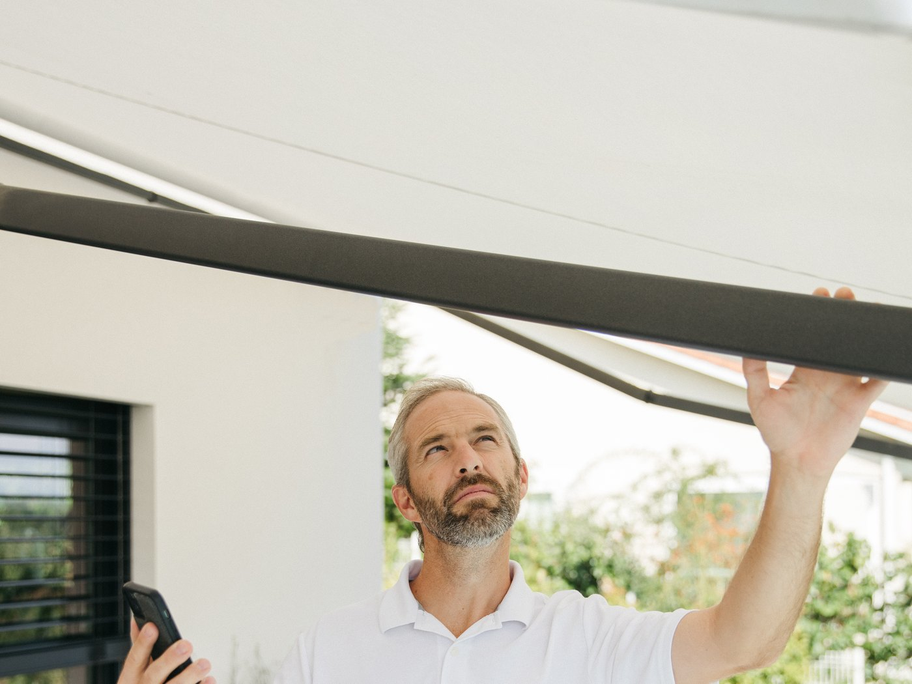

Komfortowy cień i skuteczna ochrona przed słońcem, dzięki którym możesz cieszyć się wypoczynkiem na tarasie lub balkonie nawet w upalne dni.



Komfortowy cień na tarasie i balkonie
Korba, pilot lub sterowanie Smart Home
Szeroki wybór kolorów, odporność na płowienie
Tkanina nawinięta jest na rurę w kasecie przy ścianie. Ramiona łamane wysuwają ją nad taras i utrzymują w napięciu, a Ty decydujesz, jak duży ma być cień. Z czujnikiem wiatru markiza zwija się sama, gdy pogoda się zmienia.
Pełna kaseta chroni tkaninę i ramiona całkowicie po zwinięciu — najdłuższa żywotność poszycia. Półkaseta osłania tkaninę od góry, jest lżejsza i tańsza. Otwarta sprawdza się pod zadaszeniem, gdzie poszycie nie moknie.
Szerokość markizy powinna być dopasowana do wielkości tarasu i strefy, którą ma osłaniać, a jej wysięg – do oczekiwanego zakresu cienia. Przy wyborze warto uwzględnić rozmieszczenie mebli, nasłonecznienie oraz miejsce montażu. Przed zamówieniem należy upewnić się, że konstrukcja zmieści się na elewacji.
Kolor tkaniny markizy warto dopasować do elewacji, stolarki okiennej i aranżacji tarasu. Jasne odcienie nadają przestrzeni lekkości, natomiast ciemniejsze mogą mocniej ograniczać ilość światła pod markizą.
Tak, markizę można zamontować na ocieplonej elewacji, pod warunkiem zastosowania odpowiednich mocowań dostosowanych do rodzaju ściany i grubości ocieplenia.
Tak, podczas silnego wiatru markizę należy zwinąć, aby uniknąć uszkodzenia tkaniny i konstrukcji. Markizy są narażone na duże obciążenia spowodowane podmuchami, dlatego należy przestrzegać zaleceń producenta dotyczących odporności na wiatr. Dodatkową ochronę może zapewnić automatyka Somfy z czujnikiem wstrząsowym, który uruchamia zwijanie markizy po wykryciu określonych warunków.
Markiza zapewnia przede wszystkim ochronę przed słońcem, a jej odporność na deszcz zależy od rodzaju tkaniny i konstrukcji. Nie jest przeznaczona do użytkowania podczas intensywnych opadów, które mogą obciążać materiał i prowadzić do uszkodzeń. W czasie deszczu i silnego wiatru zaleca się zwinięcie markizy zgodnie z zaleceniami producenta.
Skontaktuj się z nami — doradzimy technicznie i przygotujemy kalkulację cenową.